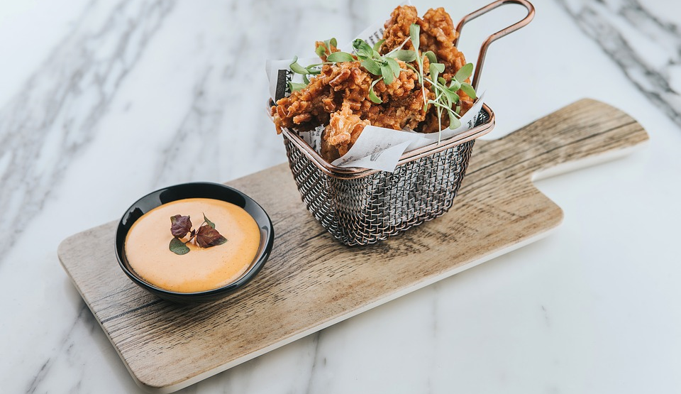

Ingredienser
- 4 portioner ris
- 4 kycklingfiléer
- 2 krm peppar
- 1 dl vetemjöl
- 2 ägg
- 1 1/2 dl ströbröd
- 1/2 dl olja
- 1 1/2 dl gräddfil
- 1/2 msk curry
- 1/2 msk sweet chilisås
Gör såhär:
- Sätt ugnen på 225°C. Sätt in en långpanna i ugnen.
- Koka riset enligt anvisning på förpackningen.
- Skär varje kycklingfilé i tre bitar, krydda med salt och peppar.
- Häll mjölet på en tallrik. Vispa upp äggen i en djup tallrik och lägg ströbrödet på ytterligare en tallrik.
- Vänd kycklingen först i mjöl, sen i ägg och sist i ströbröd.
- Stek kycklingen i omgångar i oljan i en stekpanna tills den får fin färg. Lägg den på plåten och låt stå mitt i ugnen ca 10 minuter. Kycklingens innertemperatur ska vara 70°C.
- Blanda gräddfilen med curry och sweet chilisås, smaka av med salt och peppar.